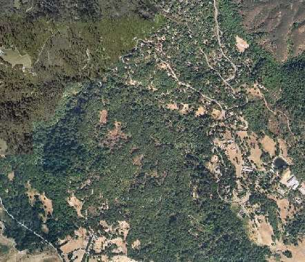
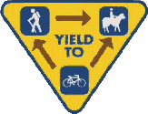

|
2007 Low-Key Hillclimbs Week 7: Alpine Fire Road 10 Nov 2007 |
|  |
| Aerial photo of Alpine Fire Road, courtesy of Google Maps |
The Low-Key Hillclimbs gets dirty this week.
This week, pull the mountain bike off the rack, put trail gears on your 'cross bike, or, if you're bold enough, mount some 28's on the wheels of your road bike, as we liberate ourselves from the pavement. We'll meet in Portola Valley, then leave in small groups for a local trail.
We'll promenade to the start of the dirt, then start as a group past the gate.
Our insurance demands it: helmets are required. Sorry kids, no exceptions!
Staging and Registration will take place at the lower Windy Hill Open Space Parking lot Preserve parking lot-Portola Road (lower) on Portola Road .8 miles north of Alpine Road. If you are coming from Alpine, it’s on your left. Coming from Sand Hill, the lot will be on your right. Porta-potty is available. Please don't park in the Windy Hill lot: we don't want to get in the way of park users. Arriving by bike is encouraged.
At 10:10 am, we’ll promenade to Alpine Road, up the paved climb to the gate where the real fun begins: the fire road to the summit, including the single-track section which bypasses the land slide. It's a fun climb accessible by bikes of all types, from mountain to cross to road to hybrid-electric recumbent.
On the single-track, all Rules of the Trail apply: a 15 mph speed limit (okay, so not even the world championship cross-country is ridden at 15 mph, descents included, but it's important to mention this), and riders must always yield to pedestrians and equestrians. This is Low-Key, after all: we're a training ride, not a "race".
| stats | 2.5 miles, 950 ft, 7.2% |
| format | mass start |
| time | reg 9:15 - 10:00 start 10:10am |
| coordinator | |
| aerial view | Google Maps |
| route profile | GPS data |
| weather | Weather Underground Weather Bonk |
| registration form |
PDF release form |
| entry fee | $10 free for juniors 2 free for volunteers free for coordinators |

{kind=link}